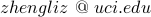

Zhengli Zhao
PhD Candidate in Machine Learning
University of California, Irvine
Donald Bren School of Information and Computer Sciences
Donald Bren Hall 4059, Irvine, CA 92617
Education
University of California, Irvine
University of California, Santa Barbara
Internship
2020, Google Brain, Mountain View, CA
2019, Google Brain, Mountain View, CA
2018, Facebook, Menlo Park, CA
News
02/25/2020 Attended the Google Research Conference, Sunnyvale, CA
12/14/2019 Presented at the NeurIPS workshop on Privacy in ML (PriML'19), Vancouver, BC
12/08/2019 Attended the 33rd Annual Conference on Neural Information Processing Systems (NeurIPS), Vancouver, BC
09/06/2019 Attended the 2nd West Coast NLP (WeCNLP) Summit, Menlo Park, CA
07/31/2019 Attended the 6th Google PhD Intern Research Conference (PIRC), Sunnyvale, CA
06/10/2019 Attended the 36th International Conference on Machine Learning (ICML), Long Beach, CA
05/01/2018 Presented at the 6th International Conference on Learning Representations (ICLR), Vancouver, BC
04/06/2018 Attended the Southern California Natural Language Processing Symposium, Irvine, CA
12/08/2017 Invited talk at the NeurIPS workshop on Machine Deception, Long Beach, CA
12/04/2017 Attended the 31st Annual Conference on Neural Information Processing Systems (NeurIPS), Long Beach, CA
10/06/2017 Attended the Southern California Machine Learning Symposium, Los Angeles, CA
01/26/2017 Co-organized the North American Computational Linguistics Olympiad (NACLO) at UCI site, Irvine, CA
Papers
-
Image Augmentations for GAN Training, Z Zhao, Z Zhang, T Chen, S Singh, H Zhang, 2020. under submission
-
Improved Consistency Regularization for GANs, Z Zhao, S Singh, H Lee, Z Zhang, A Odena, H Zhang, arXiv:2002.04724, 2020. PDF under submission
-
Top-k Training of GANs: Improving GAN Performance by Throwing Away Bad Samples, Z Zhao*, S Sinha*, A Goyal, C Raffel, A Odena, 2020. under submission
-
Estimating the Effect of Retraining for Active Few-Shot Learning, P Pezeshkpour, Z Zhao, S Singh, 2020. under submission
-
Are Quantum Samples Classically Learnable?, M Niu, A Dai, L Li, A Odena, Z Zhao, S Boixo, V Smelyanskiy , H Neven, 2020. under submission
-
Using Data Importance for Effective Active Learning, P Pezeshkpour, Z Zhao, S Singh, CVPR VL3, 2020.
-
Improving Differentially Private Models with Active Learning, Z Zhao, N Papernot, S Singh, N Polyzotis, A Odena, NeurIPS PriML, 2019. PDF
-
Generating Natural Adversarial Examples, Z Zhao, D Dua, S Singh, the 6th International Conference on Learning Representations (ICLR), 2018. PDF
Earlier versions also presented at NeurIPS Machine Deception, and SoCal ML (Best Poster Award), 2017.
-
Asymptotic Stability of BAM Neural Networks with Time-varying Delays, Z Zhao, F Liu, X Xie, X Liu, Z Tang, Neurocomputing, 117, 40-46.
-
Saturated Adaptive Robust Control for Active Suspension Systems, W Sun, Z Zhao, H Gao, IEEE Transactions on Industrial Electronics, 60 (9), 3889-3896.
-
Computing Expected Shortest Distance in Uncertain Graphs, M Li, Z Zou, H Gao, Z Zhao, Journal of Computer Research and Development, 49 (10), 2208-2220.
Review Service
Teaching Assistant
UC Irvine
CS 271 Artificial Intelligence
ICS 45C Programming in C++
ICS 6D Discrete Mathematics for Computer Science
UC Santa Barbara
ECE 179D Robotics: Control
ECE 130B Signal Analysis and Processing
Contacts

|
 |